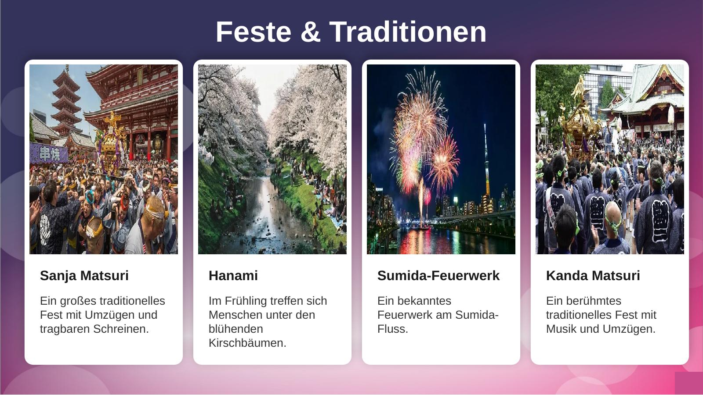

01
TOKYO · JAPAN
Feste & Traditionen
Traditionelle Feste, Natur und Kultur
日本へようこそ · Willkommen in Japan
Eine Stadt voller Kontraste: jahrhundertealte Traditionen treffen auf moderne Architektur, leuchtende Straßen und faszinierende Technik. Begib dich auf eine kleine Reise durch Japans Hauptstadt.
Tokyo erkunden ↓
Die Stadt kennenlernen
Entdecke die Themen der Präsentation – vom kulturellen Erbe bis zum modernen Großstadtleben.
TOKYO · JAPAN
Traditionelle Feste, Natur und Kultur
TOKYO · JAPAN
Von historischen Tempeln bis zu leuchtenden Stadtvierteln
TOKYO · JAPAN
Wie aus Edo das moderne Tokyo wurde
TOKYO · JAPAN
Die wichtigsten Fakten über Tokyo
TOKYO · JAPAN
Lage, Koordinaten und Umgebung
TOKYO · JAPAN
Technik, Essen, Manga und mehr
TOKYO · JAPAN
Unterwegs in einer der größten Metropolen der Welt
TOKYO · JAPAN
Gründe für die Wahl dieser faszinierenden Stadt
Wissen testen
Sechs Fragen über Tokyo. Überlege zuerst selbst und öffne danach die jeweilige Lösung.
Japan
Edo
Tokyo Tower
634 Meter
Hanami
Shintoismus und Buddhismus
ありがとう · Arigatō
Das war unsere kleine Reise durch Tokyo. Danke fürs Anschauen und Mitmachen beim Quiz.
Zurück zum Anfang ↑